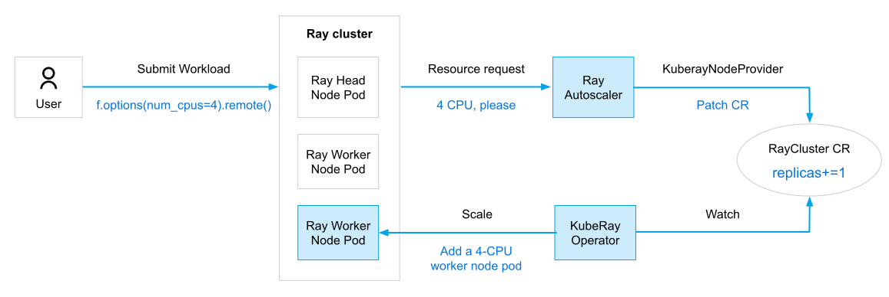

KubeRay 自动缩放
Contents
KubeRay 自动缩放#
本指南介绍了如何在 Kubernetes 上配置 Ray Autoscaler。 Ray Autoscaler 是一个 Ray 集群进程，可根据资源需求自动扩展和缩小集群。 Autoscaler 通过根据任务、actor 或置放组所需的资源调整集群中的节点 (Ray Pod) 数量来实现此目的。
Autoscaler 利用逻辑资源请求（如 @ray.remote 和 ray status 的展示）而不是物理机利用率来进行扩展。
如果您启动的 actor、任务或置放群组并且资源不足，则自动缩放器会将请求排队。
它会调整节点数量以满足队列需求，并随着时间的推移删除没有任务、 actor 或对象的空闲节点。
何时使用自动缩放？
自动缩放可以降低工作负载成本，但会增加节点启动开销，并且配置起来可能很棘手。 如果您是 Ray 新手，我们建议您从非自动缩放集群开始。
概述#
下图说明了 Ray Autoscaler 与 KubeRay operator 的集成。 尽管为了清楚起见将 Ray Autoscaler 描述为单独的实体，但在实际实现中，Ray Autoscaler 实际上是 Ray head Pod 内的一个 sidecar 容器。
3 KubeRay 中的 3 个级别的自动缩放
Ray actor/task: 一些 Ray 库，如 Ray Serve，可以根据传入的请求量自动调整 Serve 副本（即 Ray Actor）的数量。
Ray node: Ray Autoscaler 根据 Ray Actor/任务的资源需求自动调整 Ray 节点（即 Ray Pod）的数量。
Kubernetes node: 如果 Kubernetes 集群缺乏足够的资源来容纳 Ray Autoscaler 创建的新 Ray Pod，Kubernetes Autoscaler 可以配置新的 Kubernetes 节点。 您必须自行配置 Kubernetes Autoscaler。
自动缩放器通过以下事件序列扩展集群：
用户提交 Ray 工作负载。
Ray head 容器聚合工作负载资源需求并将其传达给 Ray Autoscaler sidecar。
Autoscaler 决定添加 Ray Worker Pod 来满足工作负载的资源需求。
Autoscaler 通过增加 RayCluster CR 的
replicas字段来请求额外的 worker Pod。KubeRay operator 创建 Ray Worker Pod 来匹配新
replicas规范。Ray 调度程序将用户的工作负载放置在新的 worker Pod 上。
Autoscaler 还通过删除空闲 worker Pod 来缩小集群规模。 如果它找到空闲 worker Pod，它会减少 RayCluster CR 字段中
replicas的计数，并将识别出的 Pod 添加到 CR 字段。 然后，KubeRay Operator 删除workersToDelete字段中的 Pod。
快速开始#
步骤 1: 使用 Kind 创建 Kubernetes 集群#
kind create cluster --image=kindest/node:v1.23.0
步骤 2: 安装 KubeRay Operator#
按照 本文档 通过 Helm 存储库安装最新的稳定 KubeRay Operator。
步骤 3: 创建启用自动缩放功能的 RayCluster 自定义资源#
curl -LO https://raw.githubusercontent.com/ray-project/kuberay/v1.0.0-rc.0/ray-operator/config/samples/ray-cluster.autoscaler.yaml
kubectl apply -f ray-cluster.autoscaler.yaml
步骤 4: 验证 Kubernetes 集群状态#
# 步骤 4.1: List all Ray Pods in the `default` namespace.
kubectl get pods -l=ray.io/is-ray-node=yes
# [输出示例]
# NAME READY STATUS RESTARTS AGE
# raycluster-autoscaler-head-6zc2t 2/2 Running 0 107s
# 步骤 4.2: Check the ConfigMap in the `default` namespace.
kubectl get configmaps
# [输出示例]
# NAME DATA AGE
# ray-example 2 21s
# ...
RayCluster 有一个 Head Pod 和零个 worker Pod。 head Pod 有两个容器：Ray head 容器和 Ray Autoscaler sidecar 容器。
此外， ray-cluster.autoscaler.yaml 包含一个名为 ray-example 的 ConfigMap，其中包含两个 Python 脚本：detached_actor.py 和 terminate_detached_actor.py。
detached_actor.py是一个 Python 脚本，用于创建需要 1 个 CPU 的独立 Actor。import ray import sys @ray.remote(num_cpus=1) class Actor: pass ray.init(namespace="default_namespace") Actor.options(name=sys.argv[1], lifetime="detached").remote()
terminate_detached_actor.py是一个终止独立 Actor 的 Python 脚本。import ray import sys ray.init(namespace="default_namespace") detached_actor = ray.get_actor(sys.argv[1]) ray.kill(detached_actor)
步骤 5: 通过创建分离的 actor 来触发 RayCluster 扩展#
# 步骤 5.1: Create a detached actor "actor1" which requires 1 CPU.
export HEAD_POD=$(kubectl get pods --selector=ray.io/node-type=head -o custom-columns=POD:metadata.name --no-headers)
kubectl exec -it $HEAD_POD -- python3 /home/ray/samples/detached_actor.py actor1
# 步骤 5.2: The Ray Autoscaler creates a new worker Pod.
kubectl get pods -l=ray.io/is-ray-node=yes
# [输出示例]
# NAME READY STATUS RESTARTS AGE
# raycluster-autoscaler-head-xxxxx 2/2 Running 0 xxm
# raycluster-autoscaler-worker-small-group-yyyyy 1/1 Running 0 xxm
# 步骤 5.3: Create a detached actor which requires 1 CPU.
kubectl exec -it $HEAD_POD -- python3 /home/ray/samples/detached_actor.py actor2
kubectl get pods -l=ray.io/is-ray-node=yes
# [输出示例]
# NAME READY STATUS RESTARTS AGE
# raycluster-autoscaler-head-xxxxx 2/2 Running 0 xxm
# raycluster-autoscaler-worker-small-group-yyyyy 1/1 Running 0 xxm
# raycluster-autoscaler-worker-small-group-zzzzz 1/1 Running 0 xxm
# 步骤 5.4: List all actors in the Ray cluster.
kubectl exec -it $HEAD_POD -- ray list actors
# ======= List: 2023-09-06 13:26:49.228594 ========
# Stats:
# ------------------------------
# Total: 2
# Table:
# ------------------------------
# ACTOR_ID CLASS_NAME STATE JOB_ID NAME ...
# 0 xxxxxxxx Actor ALIVE 02000000 actor1 ...
# 1 xxxxxxxx Actor ALIVE 03000000 actor2 ...
Ray Autoscaler 为每个新的独立 Actor 生成一个新的 worker Pod。
这是因为Ray head 中的字段 rayStartParams 指定了 num-cpus: "0"，从而阻止 Ray 调度程序在 Ray head Pod 上调度任何 Ray actor 或任务。
此外，每个 Ray Worker Pod 的容量为 1 个 CPU，因此 Autoscaler 创建一个新的 Worker Pod 来满足需要 1 个 CPU 的分离 Actor 的资源需求。
不需要使用分离的 actor 来触发集群扩展。 普通的 actor 和任务也可以启动它。 游离 actors 即使作业的驱动程序进程退出后，也会保持持久状态，这就是为什么 Autoscaler 不会
detached_actor.py在进程退出时自动缩小集群规模，从而使本教程更加方便。在此 RayCluster 自定义资源中，从 Ray Autoscaler 的角度来看，每个 Ray Worker Pod 仅拥有 1 个逻辑 CPU。 因此，如果您使用
@ray.remote(num_cpus=2)来创建分离的 Actor，则 Autoscaler 不会启动新 worker Pod 的创建，因为现有 Pod 的容量仅限于 1 个 CPU。高级）Ray Autoscaler 还提供 Python SDK，使高级用户（如 Ray 维护人员）能够直接从 Autoscaler 请求资源。一般来说，大多数用户不需要使用SDK。
步骤 6: 通过终止分离的 Actor 来触发 RayCluster 缩容#
# 步骤 6.1: Terminate the detached actor "actor1".
kubectl exec -it $HEAD_POD -- python3 /home/ray/samples/terminate_detached_actor.py actor1
# 步骤 6.2: A worker Pod will be deleted after `idleTimeoutSeconds` (default 60s) seconds.
kubectl get pods -l=ray.io/is-ray-node=yes
# [输出示例]
# NAME READY STATUS RESTARTS AGE
# raycluster-autoscaler-head-xxxxx 2/2 Running 0 xxm
# raycluster-autoscaler-worker-small-group-zzzzz 1/1 Running 0 xxm
# 步骤 6.3: Terminate the detached actor "actor1".
kubectl exec -it $HEAD_POD -- python3 /home/ray/samples/terminate_detached_actor.py actor2
# 步骤 6.4: A worker Pod will be deleted after `idleTimeoutSeconds` (default 60s) seconds.
kubectl get pods -l=ray.io/is-ray-node=yes
# [输出示例]
# NAME READY STATUS RESTARTS AGE
# raycluster-autoscaler-head-xxxxx 2/2 Running 0 xxm
步骤 7: Ray Autoscaler 可观测性#
# Method 1: "ray status"
kubectl exec $HEAD_POD -it -c ray-head -- ray status
# [输出示例]:
# ======== Autoscaler status: 2023-09-06 13:42:46.372683 ========
# Node status
# ---------------------------------------------------------------
# Healthy:
# 1 head-group
# Pending:
# (no pending nodes)
# Recent failures:
# (no failures)
# Resources
# ---------------------------------------------------------------
# Usage:
# 0B/1.86GiB memory
# 0B/514.69MiB object_store_memory
# Demands:
# (no resource demands)
# Method 2: "kubectl logs"
kubectl logs $HEAD_POD -c autoscaler | tail -n 20
# [输出示例]:
# 2023-09-06 13:43:22,029 INFO autoscaler.py:421 --
# ======== Autoscaler status: 2023-09-06 13:43:22.028870 ========
# Node status
# ---------------------------------------------------------------
# Healthy:
# 1 head-group
# Pending:
# (no pending nodes)
# Recent failures:
# (no failures)
# Resources
# ---------------------------------------------------------------
# Usage:
# 0B/1.86GiB memory
# 0B/514.69MiB object_store_memory
# Demands:
# (no resource demands)
# 2023-09-06 13:43:22,029 INFO autoscaler.py:464 -- The autoscaler took 0.036 seconds to complete the update iteration.
步骤 8: 清理 Kubernetes 集群#
# Delete RayCluster and ConfigMap
kubectl delete -f ray-cluster.autoscaler.yaml
# Uninstall the KubeRay operator
helm uninstall kuberay-operator
KubeRay 自动缩放配置#
快速入门示例中使用的 ray-cluster.autoscaler.yaml 包含有关配置选项的详细注释。 建议结合 YAML 文件阅读本节。
1. 启用自动缩放#
enableInTreeAutoscaling: 通过设置enableInTreeAutoscaling: true，KubeRay operator 会自动为 Ray head Pod 配置自动缩放 sidecar 容器。minReplicas/maxReplicas/replicas: 设置minReplicas和maxReplicas字段来定义workerGroup自动缩放replicas的范围。 通常，您可以在部署自动扩展集群期间使用相同的值初始化replicas和minReplicas。 随后，Ray Autoscaler在从集群中添加或删除 Pod 时调整该字段。
2. 放大和缩小速度#
如有必要，您可以调节在集群中添加或删除节点的速度。 对于具有大量短期任务的应用程序，考虑采用更保守的方法来调整放大和缩小速度可能是有益的。
利用 RayCluster CR 的 autoscalerOptions 字段来实现这一点。该字段包含以下子字段：
upscalingMode: 这控制放大过程的速率。有效值为：Conservative: 升级是有速率限制的；待处理的 worker Pod 数量最多为连接到 Ray 集群的 worker Pod 数量。Default: 升级不受速率限制。Aggressive:Default 的别名；升级不受速率限制。
idleTimeoutSeconds(默认 60s): 这表示缩小空闲 worker Pod 之前的等待时间（以秒为单位）。 当 worker 节点没有活动任务、 actor 或引用的对象（存储在内存中或溢出到磁盘）时，它处于空闲状态。
3. Autoscaler sidecar 容器#
autoscalerOptions 字段还提供用于配置自动缩放器容器的选项。通常，没有必要指定这些选项。
resources:autoscalerOptions的resources字段为 Autoscaler sidecar 容器设置可选资源覆盖。 这些覆盖应该以标准 容器资源规范格式 指定。 默认值如下所示：resources: limits: cpu: "500m" memory: "512Mi" requests: cpu: "500m" memory: "512Mi"
image: 此字段会覆盖 Autoscaler 容器镜像。 默认情况下，容器使用与 Ray 容器相同的 镜像。imagePullPolicy: 该字段会覆盖 Autoscaler 容器的镜像拉取策略。 默认是IfNotPresent。env和envFrom: 这些字段指定 Autoscaler 容器环境变量。 这些字段的格式应遵循容器环境变量的 Kubernetes API。
下一步#
参阅 （高级）了解 Kubernetes 上下文中的 Ray Autoscaler 获取跟多有关 Ray Autoscaler 和 Kubernetes 自动缩放器之间关系的详细信息。